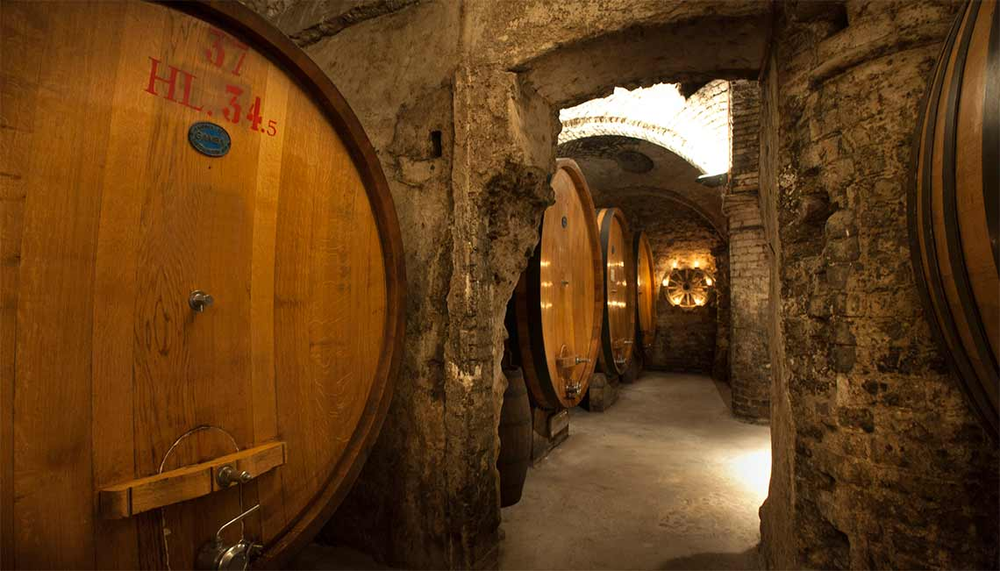
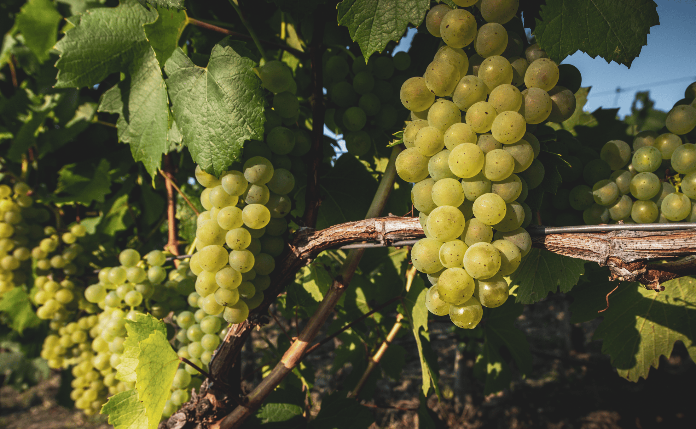

A Friday Night in Friuli With Felix Jermann
Featuring Italy's Premier White Wine Maker
An unforgettable journey through the prestigious wines of Jermann paired with authentic Friulian cuisine by Culinary Director Riccardo Longo.
Jermann
Italy's Premier White Wine Producer Since 1881



A Friulian Evening With Jermann
Featuring Italy's Premier White Wine Maker
An unforgettable journey through the prestigious wines of Jermann paired with authentic Friulian cuisine by Culinary Director Riccardo Longo.